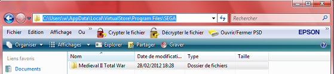

Vous adorez le jeu Médiéval II : Total War et vous habitez un patelin pommé ou une ville que les grands méchants développeurs du jeu n'ont pas mis sur la carte ? Vous vous demandez s'il est possible de la rajouter ? La réponse est OUI, de manière totalement légale bien sûr.
Dans ce tutoriel je vais vous apprendre à ajouter une ville, sans modifier le jeu de base bien entendu, en partant de... zér0 !
Avant de modifier quoi que ce soit, vous devez, bien sûr, avoir le jeu installé sur votre ordinateur. Sachez que les choses se feront différemment selon votre type d'installation :
XP et le jeu de base (vanilla),
XP et le jeu avec Kingdoms,
Vista/Seven et le jeu de base (vanilla),
Vista/Seven et le jeu avec Kingdoms.
Il n'y a pas de « meilleure » configuration. Si vous avez Vista ou Seven ce sera juste beaucoup moins pratique... :(
Les logiciels
M2TW (Médiéval II : Total War) est un jeu relativement facile à modifier. Vous devez cependant posséder un peu de matériel :
Un logiciel de dessin de bonne qualité : Photoshop ou The Gimp, je vous conseille The Gimp qui est gratuit et que vous pouvez télécharger ici.
Un convertisseur Bin : o_O gné ? Eh oui, il y a un fichier qu'il faut convertir avant d'ouvrir... Vous pouvez télécharger le Binconverter ici.
L'unpack et autres préparatifs
Vous devez unpacker le jeu. Terme barbare signifiant que vous devez aller dans C:\Program Files\SEGA\Medieval II Total War ools\unpacker et lancer l'application unpack_all.bat. Elle va extraire les fichiers cachés dans les packs du jeu pour les rendre disponibles et donc pouvoir les modifier. Par contre, ça va vous prendre de l'espace disque. Tapez Y quand on vous le demande puis patientez jusqu'à la fin (oui, un bon quart d'heure !).
En attendant la fin, vous pouvez toujours vous organiser pour la suite.
Installez The Gimp si ce n'est pas déjà fait et dézippez le Binconverter (clic droit > extraire). Sur votre bureau, créez un dossier M2TW. Mettez-y un raccourci vers The Gimp, le Binconverter, et un raccourci vers C:\Program Files\SEGA\Medieval II Total War. Rien d'obligatoire, mais autant se simplifier la vie.
Quelques autres conseils pour terminer : faites les choses tranquillement, sans vous dépêcher. La moindre faute d'orthographe est fatale et provoquera sûrement un bug. La casse (majuscule/minuscule) est également très importante et il faudra la respecter.
Ça y est ? L'unpack est terminé ? Vous devriez avoir beaucoup plus de fichiers qu'avant dans votre dossier data (C:\Program Files\SEGA\Medieval II Total War\data). Oui ? Je parie que votre OS est... XP ! :soleil:
Si vous avez XP, vous pouvez passer au chapitre suivant.
Pour les utilisateurs de Vista/Seven, ça commence à se compliquer... :'(
Si vous avez Vista ou Seven, vos fichiers se sont probablement extraits dans le Virtualstore. Rien de grave, ne vous inquiétez pas, vous pourrez les retrouver ici : C:\Users\VOTRE NOM DE COMPTE\AppData\Local\VirtualStore\Program Files\SEGA\Medieval II Total War. Si vous ne trouvez pas le fichier Appdata sous votre nom de compte, tapez-le dans la barre, il est caché ;). Si vous n'y arrivez vraiment pas, retournez dans le répertoire du jeu (C:\Program Files\SEGA\Medieval II Total War) et cliquez sur « Fichiers de compatibilité » sous la barre d'outils :

Dans votre dossier sur le bureau, créez aussi un raccourci menant vers le Virtualstore, c'est très pratique. Vous pouvez aussi déplacer les fichiers du Virtualstore dans le répertoire, mais je ne vous le conseille pas, si jamais vous deviez de nouveau unpacker ensuite ce serait très gênant.
Pour les besoins de l'exemple, je vais ajouter la région de Brest. Vous pouvez faire la même que moi ou tenter d'en faire une autre, comme vous voulez : l'important est de toute façon que vous puissiez le faire ensuite par vous-même.
L'unpack (qui extrait tous les fichiers des packs) a un autre effet désagréable. Il peut faire bugger les combats. Pour résoudre ce problème, il suffit de supprimer (ou de déplacer) les deux fichiers descr_geography_new.txt et descr_geography_new.db, situés dans le dossier data du répertoire (le dossier data du Virtualstore sous Vista/Seven). Bon allez, trêve de bavardage, on dessine maintenant !
Pas besoin d'être des artistes pour ce genre de dessin, ne vous inquiétez pas ! ;)
Copiez le dossier suivant dans votre dossier du bureau : C:\Program Files\SEGA\Medieval II Total War\data\world\maps\base. Parmi ces copies, ouvrez le fichier map_regions.tga avec The Gimp par exemple.
Zoomez (Ctrl + molette avant) et, avec le crayon, coloriez votre région dans une couleur qui n'existe pas déjà. Pour ma part, j'ai toujours pris mes couleurs au hasard et je ne suis jamais tombé sur une région qui existait déjà !
Ajoutez ensuite un pixel noir (noir, pas gris foncé) qui représentera la ville et un point blanc (blanc, pas gris clair :-° ) pour le port si votre région touche la mer.
Vous obtenez quelque chose du style :
Vous remarquerez (ou pas !) que j'ai légèrement déplacé Rennes. Vous pouvez déplacer les villes que vous voulez où vous voulez, mais vous ne pouvez les placer ni sur de l'eau ni sur des montagnes. De plus, il faudra aussi déplacer les garnisons se trouvant dans ces villes : nous verrons ça plus tard.
Lorsque vous avez fini de colorier votre région, utilisez l'outil pipette pour connaître la valeur RVB de votre région :
Notez ces trois nombres. Sauvegardez et fermez !
Ouvrez votre copie du fichier descr_regions.txt, dans le même dossier. Descendez tout en bas. C'est maintenant que vous allez choisir le nom de code de votre région et de votre ville, ainsi que ses principales caractéristiques. Descendez tout en bas, copiez la dernière ville (Dongola normalement), collez dessous, et modifiez en suivant les consignes suivantes. N'oubliez pas le plus important : il faut que vous appreniez à le faire par vous même. Vous pouvez, pour essayer, faire la même chose que moi, mais ça n'est certainement pas une fin en soi. Étudions le code d'une région ligne par ligne :
C'est le nom de code de votre province. Évitez les espaces et autres signes particuliers et terminez par « _Province ». Vous devez respecter la casse !
Ensuite, c'est le nom de code de votre ville. Même chose, pas d'espace ni de signes particuliers. Ne vous inquiétez pas, dans le jeu vous pouvez faire apparaître des espaces si vous le souhaitez, on verra comment tout à l'heure. ;)
La faction d'appartenance de la région (en anglais !).
Les rebelles pouvant en prendre le contrôle (en anglais aussi).
Ensuite, c'est la valeur RVB de la région, que vous avez notée tout à l'heure.
Les ressources disponibles. Je vous conseille de copier une région proche de la vôtre géographiquement.
La productivité de votre région (de 1 à 10). Laissez 5 si vous voulez, c'est suffisant. Laissez le chiffre de dessous inchangé.
La dernière ligne, vous l'aurez deviné, concerne les religions. Le total doit être égal à 100.
Voici donc pour mon exemple de Brest :
Ouvrez ensuite votre copie de descr_sounds_music_types.txt. Ajoutez votre région à la liste de votre faction afin que les mêmes thèmes musicaux s'y appliquent :
Voilà déjà une bonne chose de faite. Mais le travail est très loin d'être terminé !
Les aspects de votre région
Vous devez maintenant définir à qui appartient votre ville, quel est son nombre d'habitants, sa garnison, etc. Pour cela, copiez dans votre dossier du bureau le dossier C:\Program Files\SEGA\Medieval II Total War\data\world\maps\campaign\imperial_campaign.
Rapidement, ouvrez votre copie du fichier descr_mercenaries.txt. Ajoutez votre région à votre faction :
Ça concerne les mercenaires disponibles dans votre région : ce seront les mêmes que ceux de votre faction.
Ensuite, ouvrez votre copie du fichier descr_regions_and_settlement_name_lookup.txt et, en bas, ajoutez votre nom de code de région et de ville :
Facile, hein ? Ben c'est fini les choses faciles. :p
Maintenant, on attaque le fichier le plus complexe : descr_strat.txt. Ouvrez la copie que vous en avez faite.
Vous trouvez là une rapide description de la faction, et enfin une longue description des villes (Paris, Angers, Toulouse, etc.).
Les villes dont la description commence par settlement_castle sont en fait des châteaux. Nous allons ajouter Brest à la France (drôle d'idée, je sais, mais c'est pour l'exemple, nous verrons plus tard comment ajouter une ville aux rebelles). Prenez exemple sur une autre ville et copiez un peu plus bas, juste avant la description des personnages de la faction.
Alors, prenons le temps de tout décortiquer :
Vous devrez choisir settlement si c'est une ville, settlement_castle si c'est un château. Ensuite, c'est le niveau de la ville ou du château : town, large_town, city, large_city... Je vous suggère de créer une ville de niveau town ou large_town, sinon votre ville sera un peu énorme pour le début du jeu.
Vous avez ensuite le nom de code de la région, l'année de fondation (on s'en fiche), et la population (il y a des paliers selon le niveau de votre ville - copiez sur une autre de même niveau !).
Vous avez enfin le nom de la faction créatrice puis la liste des bâtiments. Copiez là encore une ville de niveau similaire ayant les mêmes caractéristiques : ville, ville avec port, château, château avec port... en l'occurrence, pour Brest, c'est un château avec port.
Vous savez quoi ? C'est presque fini !
Les noms en jeu
Bon, c'est bien joli, mais on ne s'est toujours pas servi du Binconverter ! Ce serait dommage. ;)
Maintenant, pour que le jeu puisse marcher, il faut lui indiquer quoi afficher en jeu. Allez dans C:\Program Files\SEGA\Medieval II Total War\data ext et copiez le fichier imperial_campaign_regions_and_settlement_names.txt.strings.bin dans votre dossier du bureau.
Vista, Seven, vous ne le trouvez pas ? Il est ici, dans le Virtualstore : C:\Users\ VOTRE NOM DE COMPTE\AppData\Local\VirtualStore\Program Files\SEGA\Medieval II Total War\data ext. Pour l'ouvrir, il va falloir le convertir.
Ouvrez le Binconverter, tapez imperial_campaign_regions_and_settlement_names et convertissez de Bin à Txt. N'ajoutez rien après la dernière ligne. Ouvrez le fichier .txt nouvellement créé dans votre dossier.
Descendez tout en bas et observez la logique du fichier :
Nom de code de la ville
Nom de la ville en jeu
Nom de code de la région
Nom de la région en jeu
Dans mon cas, j'ajoute donc ceci :
Sauvegardez et rouvrez le Binconverter. Cette fois, il va falloir convertir dans l'autre sens, en tapant imperial_campaign_regions_and_settlement_names, puis en cliquant sur de Txt à Bin. Ne vous trompez pas sinon vous allez tout simplement annuler vos changements.
Bon ! Vous devez maintenant avoir dans vos dossiers 7 fichiers que vous avez modifiés :
map_regions.tga dans base
descr_regions.txt dans base
descr_sounds_music_types.txt dans base
descr_mercenaries.txt dans imperial_campaign
descr_region_and_settlement_name_lookup.txt dans imperial_campaign
Vous allez maintenant devoir créer un répertoire dans le jeu, dans lequel vous mettrez vos fichiers modifiés : c'est la partie la moins amusante et surtout, c'est la partie dans laquelle il ne faut surtout pas se tromper. Vous allez devoir créer plein de dossiers et de sous-dossiers pour reconstituer l'apparence du jeu de base. Soyez attentifs !! Ensuite nous ajouterons un raccourci pour lancer directement votre mod.
Allez maintenant directement au sous-chapitre qui concerne votre type d'installation :
XP et le jeu de base (vanilla)
Il faut créer un nouveau dossier : c'est brestmod dans mon exemple, mais choisissez comme vous le voulez. Créez-le dans votre répertoire Medieval II Total War. Si vous n'utilisez pas le nom brestmod, vous devrez bien sûr remplacer chaque occurrence du mot dans ce chapitre par le nom que vous aurez choisi.
Ensuite, ouvrez le fichier medieval2.preference.cfg, situé dans le répertoire du jeu, et enregistrez-le sous le nom brestmod_preference.cfg, toujours dans le répertoire du jeu. Ouvrez-le avec un bloc-note. Rajoutez à la fin :
[features]
mod = brestmod
[log]
to = logs/system.log.txt
level = * error
Pour faire marcher votre mod mettez les dossiers suivants, que vous avez modifiés, dans votre nouveau répertoire :
Vous devez reconstituer la structure et vous obtenez ainsi quelque chose du style : C:\Program Files\SEGA\Medieval II Total War\brestmod\data\world\maps\base Et C:\Program Files\SEGA\Medieval II Total War\brestmod\data\world\maps\campaign\imperial_campaign.
Les fichiers son :
C:\Program Files\SEGA\Medieval II Total War\data\sounds\events.dat et events.idx sont à copier dans C:\Program Files\SEGA\Medieval II Total War\brestmod\data\sounds.
Et votre fichier imperial_campaign_regions_and_settlement_names.txt.strings.bin dans :
C:\Program Files\SEGA\Medieval II Total War\brestmod\data ext.
Maintenant, copiez votre raccourci de lancement du jeu, et faites clic droit/propriétés. Ajoutez à la cible : "@brestmod_preference.cfg" (n'oubliez pas un espace devant le premier guillemet). Vous pouvez aussi le renommer pour le différencier du raccourci du jeu.
Vous pouvez passer au chapitre suivant.
XP et le jeu avec Kingdoms
Il faut créer un nouveau dossier : c'est brestmod dans mon exemple, mais choisissez comme vous le voulez. Créez-le dans votre répertoire Medieval II Total War, dans le dossier "mods". Si vous n'utilisez pas le nom brestmod, vous devrez bien sûr remplacer chaque occurrence du mot dans ce chapitre par le nom que vous aurez choisi.
Ensuite, ouvrez le fichier medieval2.preference.cfg, situé dans le répertoire du jeu, et enregistrez-le sous le nom brestmod_preference.cfg, toujours dans le répertoire du jeu. Ouvrez-le avec un bloc-note. Rajoutez à la fin :
[features]
## relative mod path
mod = mods/brestmod
[log]
to = logs/system.log.txt
level = * error
Pour faire marcher votre mod mettez les dossiers suivants, que vous avez modifiés, dans votre nouveau répertoire :
Vous devez reconstituer la structure et vous obtenez ainsi quelque chose du style : C:\Program Files\SEGA\Medieval II Total War\mods\brestmod\data\world\maps\base Et C:\Program Files\SEGA\Medieval II Total War\mods\brestmod\data\world\maps\campaign\imperial_campaign.
Les fichiers son :
C:\Program Files\SEGA\Medieval II Total War\data\sounds\events.dat et events.idx sont à copier dans C:\Program Files\SEGA\Medieval II Total War\mods\brestmod\data\sounds.
Et votre fichier imperial_campaign_regions_and_settlement_names.txt.strings.bin dans :
C:\Program Files\SEGA\Medieval II Total War\mods\brestmod\data ext.
Maintenant, copiez votre raccourci de lancement du jeu, et faites clic droit/propriétés. Ajoutez à la cible : "@brestmod_preference.cfg" (n'oubliez pas un espace devant le premier guillemet). Vous pouvez aussi le renommer pour le différencier du raccourci du jeu.
Vous pouvez passer au chapitre suivant.
Vista/Seven et le jeu de base (vanilla)
Il faut créer un nouveau dossier, brestmod dans mon exemple, mais choisissez comme vous le voulez. Créez-le dans votre répertoire Medieval II Total War ET dans le Virtualstore. Si vous n'utilisez pas le nom brestmod, vous devrez bien sûr remplacer chaque occurrence du mot dans ce chapitre par le nom que vous aurez choisi.
Ensuite, ouvrez le fichier medieval2.preference.cfg, situé dans le répertoire du jeu, et enregistrez-le sous le nom brestmod_preference.cfg, toujours dans le répertoire du jeu. Ouvrez-le avec un bloc-note. Rajoutez à la fin :
[features]
mod = brestmod
[log]
to = logs/system.log.txt
level = * error
Pour faire marcher votre mod mettez les dossiers suivants, que vous avez modifiés, dans votre nouveau dossier du répertoire :
Vous devez reconstituer la structure et vous obtenez ainsi quelque chose du style : C:\Program Files\SEGA\Medieval II Total War\brestmod\data\world\maps\base Et C:\Program Files\SEGA\Medieval II Total War\brestmod\data\world\maps\campaign\imperial_campaign.
Les fichiers son :
C:\Program Files\SEGA\Medieval II Total War\data\sounds\events.dat et events.idx sont à copier dans C:\Program Files\SEGA\Medieval II Total War\brestmod\data\sounds.
Et votre fichier imperial_campaign_regions_and_settlement_names.txt.strings.bin dans :
C:\Users\VOTRE NOM DE COMPTE\AppData\Local\VirtualStore\Program Files\SEGA\Medieval II Total War\brestmod\data ext.
Maintenant, copiez votre raccourci de lancement du jeu, et faites clic droit/propriétés. Ajoutez à la cible : "@brestmod_preference.cfg" (n'oubliez pas un espace devant le premier guillemet). Vous pouvez aussi le renommer pour le différencier du raccourci du jeu.
Vous pouvez passer au chapitre suivant.
Vista/Seven et le jeu avec Kingdoms
Il faut créer un nouveau dossier, brestmod dans mon exemple, mais choisissez comme vous le voulez. Créez-le dans le dossier "mods" de votre répertoire Medieval II Total War ET dans le dossier "mods" du Virtualstore. Si vous n'utilisez pas le nom brestmod, vous devrez bien sûr remplacer chaque occurrence du mot dans ce chapitre par le nom que vous aurez choisi.
Ensuite, ouvrez le fichier medieval2.preference.cfg, situé dans le répertoire du jeu, et enregistrez-le sous le nom brestmod_preference.cfg, toujours dans le répertoire du jeu. Ouvrez-le avec un bloc-note. Rajoutez à la fin :
[features]
## relative mod path
mod = mods/brestmod
[log]
to = logs/system.log.txt
level = * error
Pour faire marcher votre mod mettez les dossiers suivants, que vous avez modifiés, dans votre nouveau dossier du répertoire :
Vous devez reconstituer la structure et vous obtenez ainsi quelque chose du style : C:\Program Files\SEGA\Medieval II Total War\mods\brestmod\data\world\maps\base Et C:\Program Files\SEGA\Medieval II Total War\mods\brestmod\data\world\maps\campaign\imperial_campaign.
Les fichiers son :
C:\Program Files\SEGA\Medieval II Total War\data\sounds\events.dat et events.idx sont à copier dans C:\Program Files\SEGA\Medieval II Total War\mods\brestmod\data\sounds.
Et votre fichier imperial_campaign_regions_and_settlement_names.txt.strings.bin dans :
C:\Users\VOTRE NOM DE COMPTE\AppData\Local\VirtualStore\Program Files\SEGA\Medieval II Total War\mods\brestmod\data ext.
Maintenant, copiez votre raccourci de lancement du jeu, et faites clic droit/propriétés. Ajoutez à la cible : "@brestmod_preference.cfg" (n'oubliez pas un espace devant le premier guillemet). Vous pouvez aussi le renommer pour le différencier du raccourci du jeu.
Maintenant, le moment décisif. Il faut vérifier que ça marche ! Vous allez lancer votre raccourci tout beau tout neuf. Voilà ce que vous devez faire :
Démarrez une nouvelle campagne. Elle va mettre un petit moment à se lancer, c'est normal le jeu doit générer la nouvelle carte. Je vais être franc, il y a peu de chance que ça marche du premier coup : dans ce cas, voyez les erreurs standards, dans les annexes, mais surtout revérifiez bien les étapes de la création du répertoire de mod.
Si ça marche : bravo ! Appuyez sur « ù » (oui oui, « ù », la touche à droite de « m ») dans la carte de campagne. Une bande grise s'affiche : c'est la bande des codes.
Placez le curseur de la souris au-dessus de votre ville et tapez show_cursorstat. Ça vous donne les coordonnées de votre pointeur (donc de votre ville !), soit pour Brest dans mon exemple : 88, 134.
Notez-les, ça vous permettra d'ajouter une garnison. Si votre ville est aux rebelles ou à une autre faction et que vous ne la voyez pas sur la carte à cause du brouillard de guerre, tapez toggle_fow afin de le dissiper et de dévoiler votre ville. C'est beau, hein ?
Allez, je vous accorde 10 minutes de pause pour admirer votre oeuvre.
Ajouter une garnison
Ayé ? Ah, quel grand moment, votre première ville. Mais elle est vide ! :(
Pas de panique, on va ajouter un général dedans et quelques unités pour la défendre ! :pirate:
Ouvrez votre cher fichier descr_strat.txt. Descendez jusqu'à votre faction et, entre deux généraux, ajoutez le vôtre :
Nous ne créerons ici qu'un simple général, le but de ce tutoriel n'étant pas de rajouter des lignes à l'arbre généalogique royal de votre faction. Entre deux personnages, ajoutez une ligne en copiant un autre général. Voici comment s'organise cette ligne :
Prénom Nom, named character (pour dire que c'est un général et pas juste un chef d'armée), male (non, je n'ai jamais essayé female), age (je ne vous traduis pas), x et y (coordonnées qui doivent être celles que vous avez notées).
Les « traits » sont les spécificités de votre général. Comme d'habitude, un petit c/c devrait suffire. Vous pouvez jouer avec les chiffres et admirer les effets sur votre général sans souci. N'oubliez pas les Bodyguard (gardes du corps du général, c'est OBLIGATOIRE), et ajoutez quelques unités pour faire bonne mesure.
Vous avez fait des essais en ajoutant la ville à une faction, mais finalement vous préféreriez la donner aux rebelles et aller la prendre par les armes ? Pas de souci !
Tout se passe dans le descr_strat.txt. Au lieu d'ajouter la description de votre région dans une faction, ajoutez-la à la faction « slave » (c'est à dire Rebelles – c'est à la fin du fichier, faites édition et rechercher). Pour la garnison, de la même façon, ajoutez-la plus bas avec les autres chefs de guerre rebelles. Il y a quelques différences sur la ligne du général :
Vous devez supprimer la ligne traits.
Dans mon exemple :
character sub_faction france, Arthur de Montfort, named character, male, age 25, x 88, y 134 .
army
[...]
Erreurs ou questions fréquentes
Rien de très grave : il suffit de supprimer (ou de déplacer) les deux fichiers descr_geography_new.txt et descr_geography_new.db, situés dans le dossier data du répertoire (le dossier data du Virtualstore sous Vista/Seven).
Il faut supprimer le fichier map.rwm, situé dans C:\Program Files\SEGA\Medieval II Total War\data\world\maps\base (Vista et Seven, c'est dans le Virtualstore). Il s'agit de la carte qui est générée avec le map_regions.tga. Mais elle ne se génère que si elle est absente. :p
Vérifiez que vous n'avez pas fait de faute d'orthographe dans vos fichiers modifiés, le jeu ne les supporte pas ; vérifiez aussi que chacun des fichiers modifiés est à la bonne place, que l'arborescence des dossiers est bonne. Vérifiez enfin que, dans le fichier imperial_campaign_regions_and_settlement_names.txt.strings.bin, vous n'avez pas oublié d'augmenter de 2 le troisième nombre pour chaque ville que vous avez ajouté.
Il faut que le Binconverter soit dans le même dossier que votre fichier .bin à modifier. De plus, vous devez entrer le nom du fichier sans ses extensions (avant .names).
Vous vous rappelez (ou pas), dans le fichier des préférences, on a ajouté une partie "logs". Ce code crée un fichier .txt lorsque le jeu crash en vous indiquant d'où vient le problème. Ce fichier est situé dans le dossier logs du répertoire du jeu (Virtualstore sous Vista/Seven).
J'ai découvert d'autres tutoriels sur le net où la manière de faire n'est pas la même. Je fais quoi ?
Faites comme vous voulez. L'important c'est le résultat, après tout. La manière que j'utilise est une manière sécurisée, et je crois que c'est le plus important. ;)
Oui, mais pourquoi ne faut-il pas modifier le jeu de base, ce serait quand même beaucoup plus pratique que de créer un répertoire de mod pour une seule ville...
En cas d'erreur, vous ne pourriez plus jouer du tout, et si vous voulez supprimer un changement, il faut tout réinstaller, alors qu'avec le répertoire particulier, vous pouvez à tout moment rejouer au jeu original, et de plus, celui-ci ne risque rien à vos manœuvres. L'autre avantage c'est que ça vous habitue au répertoire de mod, pour le cas où vous voudriez créer un mod plus avancé.
Peut-on placer deux personnages dans la même ville ?
Non. Le jeu ne peut pas marcher si vous placez deux personnages, deux généraux ou un personnage et un général dans la même ville (c'est à dire aux mêmes coordonnées). Vous pouvez par contre placer un autre personnage tout près de la ville, en faisant légèrement varier les coordonnées.
Pour aller plus loin
Ce tutoriel vous a semblé d'une simplicité époustouflante et vous voulez aller plus loin ? Sachez qu'il existe de nombreux mods déjà faits pour Médiéval II. Peut-être pourrez-vous trouver votre bonheur parmi eux. Ils vous sont proposés gratuitement au téléchargement sur jeuxvideopc.com, ou sur Mundus Bellicus.fr.
Vous trouverez également d'autres tutoriels de modding pour Médiéval II sur Mundus Bellicus.fr, en français, ou sur Total War.org, en anglais.
Je sortirai également sous peu un nouveau mod pour ajouter une faction au jeu, toujours avec seulement The Gimp et le Binconverter, et toujours pour des Zér0s !
Et voilà ! Vous avez désormais toutes les clefs pour créer vos propres villes dans Médiéval II. Je vous rappelle le principe de base : essayez, tentez des choses ! Au bout de 1, 2, 10 essais, ça finira par marcher. Soyez patients et procédez bien étape par étape.